Modeling diffraction#
Lentil uses Fourier transform-based algorithms to numerically model the propagation of an
electromagnetic field through an optical system. The electromagnetic field is represented
by a Wavefront object which stores the complex amplitude of the field at a discretely
sampled grid of points. The optical system is represented by a set of user-defined Plane
objects which the wavefront interacts with as it propagates through the system.
Note
This section of the User Guide assumes an undergraduate-level understanding of physical and Fourier optics. In-depth mathematical background and an extensive discussion of the validity of each diffraction approximation is available in [1].
Numerical diffraction propagation#
Lentil numerically models diffraction by propagating a Wavefront object through
any number of Plane objects representing an optical system. This propagation always
follows the same basic flow:
Create a new wavefront - A
Wavefrontrepresents a monochromatic, discretely sampled complex field that may propagate through space. By default, when a newWavefrontis constructed it represents an infinite plane wave (1+0j). Note that “infinite” in this case really just means that the wavefront field is broadcastable to any shape necessary.>>> w1 = lentil.Wavefront(wavelength=650e-9) >>> w1.field 1+0j >>> w1.focal_length inf
Propagate the wavefront through the first plane in the optical system - the planes that describe an optical system typically modify a propagating wavefront in some way. By multiplying a
Wavefrontand aPlanetogether, a newWavefrontis returned representing the the complex field after propagating through the plane:>>> pupil = lentil.Pupil(amplitude=lentil.circle((256, 256), 120), ... pixelscale=1/240, focal_length=10) >>> w2 = w1 * pupil
Note the complex field of
w2now clearly shows the effect of propagating through the circular aperture ofpupil:>>> plt.imshow(np.abs(w2.field), origin='lower')

Additionally, because
w2was propagated through aPupilplane, it has inherited the pupil’s focal length:>>> w2.focal_length 10
It is also possible to perform the multiplication in-place, reducing the memory footprint of the propagation:
>>> w1 *= pupil
Note
Additional details on the plane-wavefront interaction can be found in How a plane affects a wavefront.
Propagate the wavefront to the next plane in the optical system - the
Wavefrontobject provides a number of methods to propagate between planes. The appropriate method should be chosen based on the plane types the wavefront is propagating between.From
To
Method
propagate_pupil()N/A
N/A
Propagations are defined by the following attributes:
pixelscale- the spatial sampling of the output planenpix- the shape of the output planenpix_prop- the shape of the propagation plane. See npix vs npix_prop for additional details.oversample- the number of times to oversample the output plane. See the section on Sampling considerations for more details.
For example, to propagate a
Wavefrontfrom aPupilto anImageplane:>>> w2.propagate_image(pixelscale=5e-6, npix=64, oversample=5) >>> plt.imshow(w2.intensity**0.1, origin='lower')
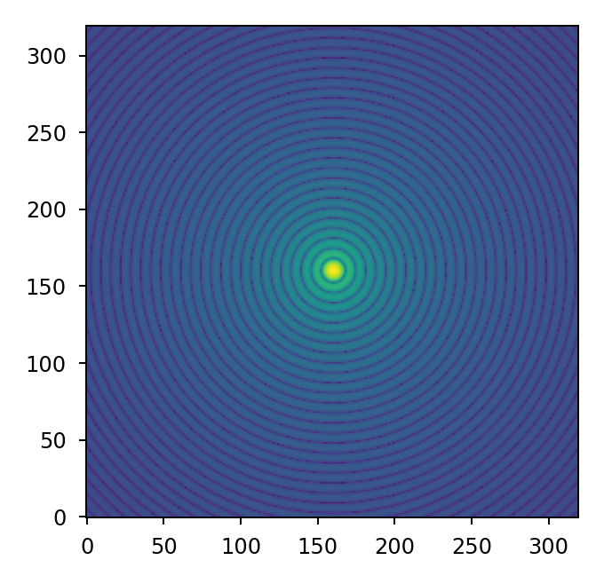
Note
When propagating between like planes (pupil to pupil or image to image), no additional propagation step is required.
Repeat steps 2 and 3 until the propagation is complete - if multiple planes are required to model the desired optical system, steps 2 and 3 should be repeated until the
Wavefronthas been propagated through all of the planes.
Performing propagations in-place vs. on copies#
By default, all propagation operations operate on a Wavefront in-place. If desired,
a copy can be returned instead by providing the argument inplace=False:
import matplotlib.pyplot as plt
import lentil
pupil = lentil.Pupil(amplitude=lentil.circle((256, 256), 120),
pixelscale=1/240, focal_length=10)
w1 = lentil.Wavefront(650e-9)
w2 = w1 * pupil
w3 = w2.propagate_image(pixelscale=5e-6, npix=64, oversample=5, inplace=False)
plt.subplot(121)
plt.imshow(w2.intensity, origin='lower')
plt.title('w2 intensity')
plt.subplot(122)
plt.imshow(w3.intensity**0.1, origin='lower')
plt.title('w3 intensity')
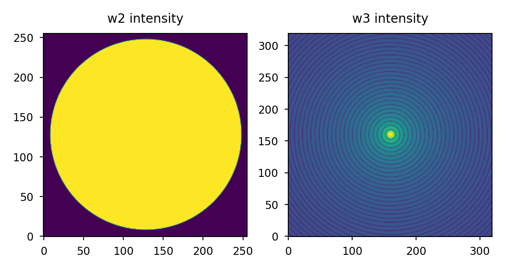
Broadband (multi-wavelength) propagations#
The steps outlined above propagate a single monochromatic Wavefront through an
optical system. The example below performs the same operation for multiple
different wavelengths and accumulates the resulting image plane intensity:
import matplotlib.pyplot as plt
import numpy as np
import lentil
pupil = lentil.Pupil(amplitude=lentil.circle((256, 256), 120),
pixelscale=1/240, focal_length=10)
wavelengths = np.arange(450, 650, 10)*1e-9
img = np.zeros((320,320))
for wl in wavelengths:
w = lentil.Wavefront(wl)
w *= pupil
w.propagate_image(pixelscale=5e-6, npix=64, oversample=5)
img += w.intensity
plt.imshow(img**0.1, origin='lower')
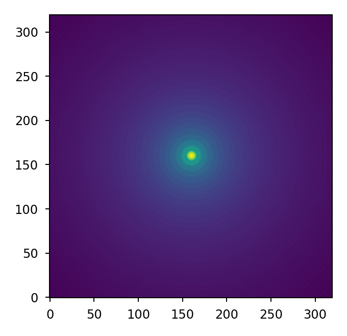
Keep in mind the output img array must be sized to accommodate the oversampled
wavefront intensity given by npix * oversample.
Note
Each time wavefront.field or wavefront.intensity is accessed, a new Numpy
array of zeros with shape = wavefront.shape is allocated. It is possible to
avoid repeatedly allocating large arrays of zeros when accumulating the result of
a broadband propagation by using Wavefront.insert() instead. This can result
in significant performance gains, particularly when wavefront.shape is large.
The above example can be rewritten to use Wavefront.insert() instead:
for wl in wavelengths:
w = lentil.Wavefront(wl)
w *= pupil
w.propagate_image(pixelscale=5e-6, npix=64, oversample=5)
img = w.insert(img)
npix vs npix_prop#
Lentil’s propagation methods have two arguments for controlling the shape of
the propagation output: npix and npix_prop.
npix specifies the shape of the entire output plane while npix_prop
specifies the shape of the propagation result. If npix_prop is not
specified, it defaults to npix. The propagation result is placed in the
appropriate location in the (potentially larger) output plane when a Wavefront
field or intensity
attribute is accessed.
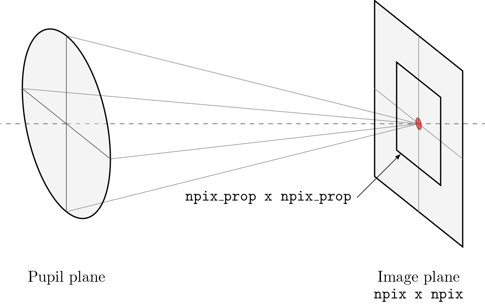
It can be advantageous to specify npix_prop < npix for performance
reasons, although care must be taken to ensure needed data is not accidentally
left out:
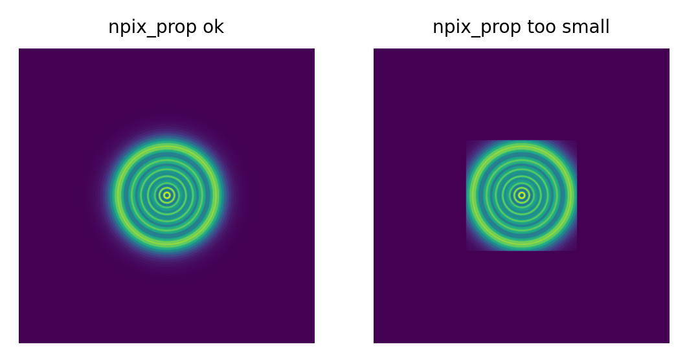
For most pupil to image plane propagations, setting npix_prop to 128 or 256
pixels provides an appropriate balance of performance and propagation plane size.
For image to pupil plane propagations, npix_prop must be sized to ensure
the pupil extent is adequately captured. Because the sampling constraints on
image to pupil plane propagations are typically looser, it is safest to let
npix_prop default to the same value as npix.
Discrete Fourier transform algorithms#
Most diffraction modeling tools use the Fast Fourier Transform (FFT) to evaluate the discrete Fourier transform (DFT) when propagating between planes. While the FFT provides great computational and memory efficiency, high-fidelity optical simulations may require working with exceptionally large zero-padded arrays to satisfy the sampling requirements imposed by the FFT.
Lentil implements a more general form of the DFT sometimes called the matrix triple product (MTP DFT) to perform the Fourier transform to propagate between planes. While the MTP DFT is slower than the FFT for same sized arrays, the MTP DFT provides independent control over the input and output plane sizing and sampling. This flexibility makes the MTP DFT ideally suited for performing propagations to discretely sampled image planes where it is often necessary to compute a finely sampled output over a relatively small number of pixels.
The chirp Z-transform provides additional efficiency when transforming large arrays. Lentil selects the most appropriate DFT method automatically based on the plane size and sampling requirements.
Sampling considerations#
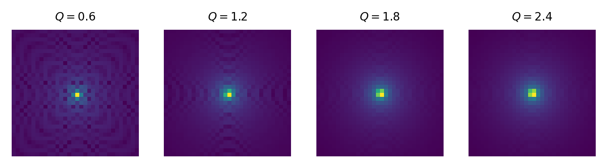
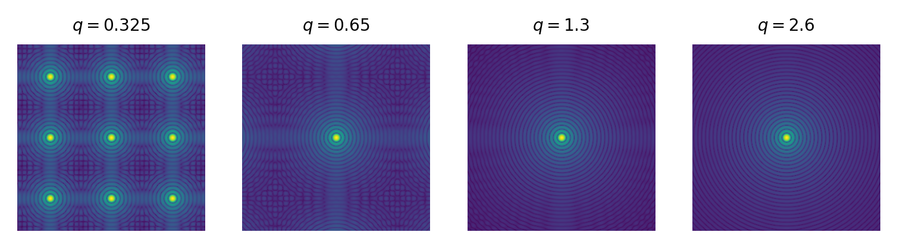
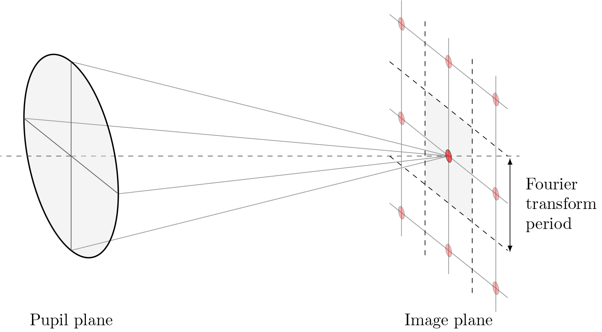
Working with large tilts#
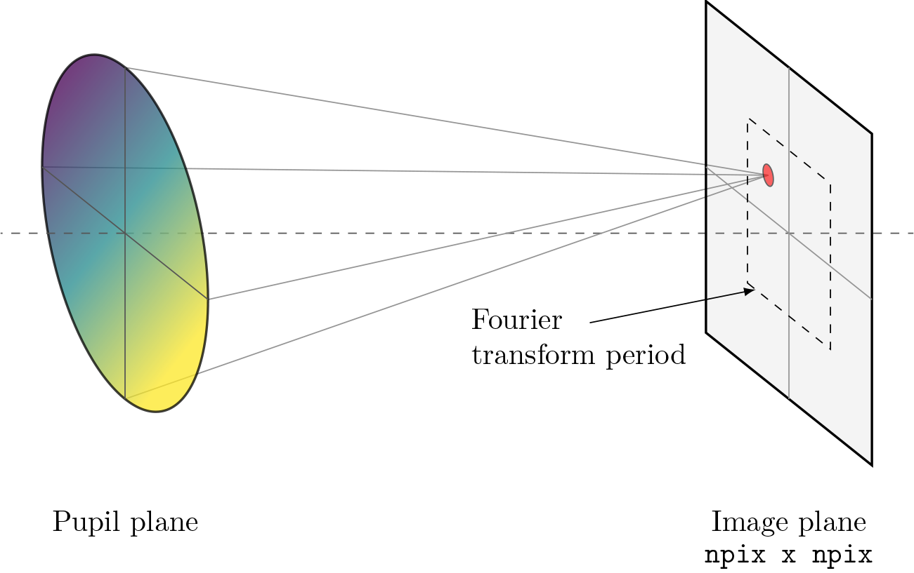
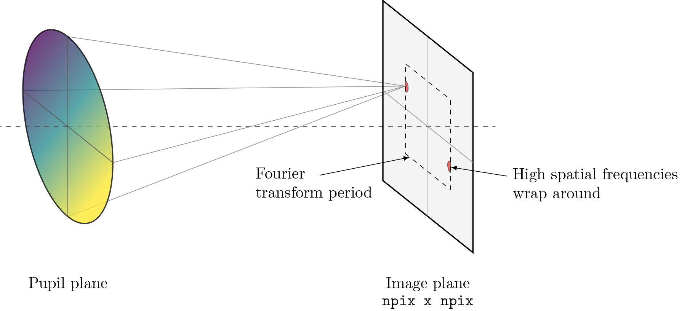
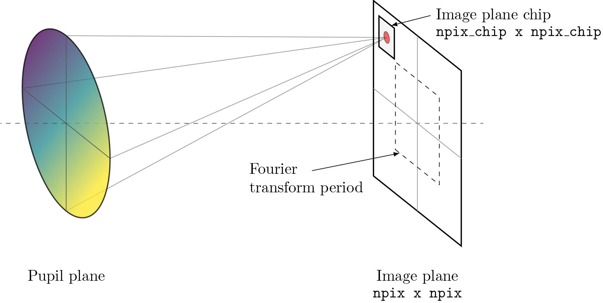
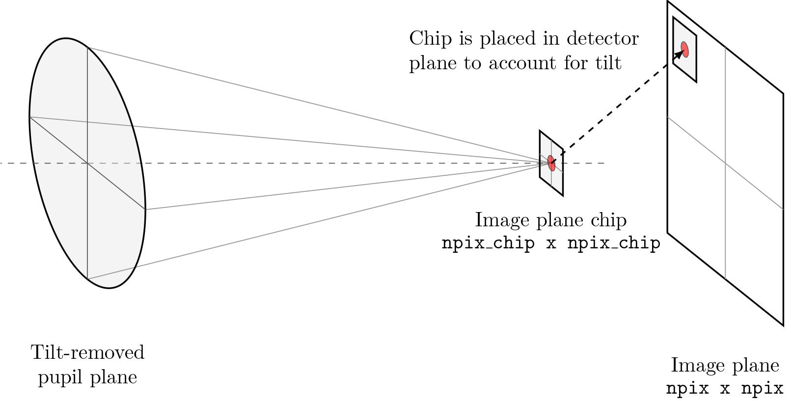